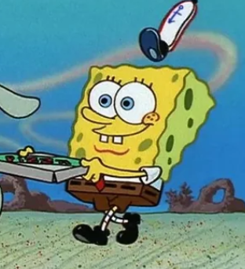

SpongeBob SquarePants

Fry Cook at the Krusty Krab
SpongeBob SquarePants is a resident of Bikini Bottom and fry cook at the popular Krusty Krab restaurant since 1999.
Currently pursuing a boating license at Mrs. Puff's Boating School. Attended Kamp Koral during his childhood years.
Experiences
Fry Cook at the Krusty Krab (1999-present)
- Vital to the operations of the Krusty Krab. Expert in grilling and serving Krabby Patties.
- Hired after serving thousands of Krabby Patties in minutes to a massive crowd of anchovies, saving the Krusty Krab from disaster.
- Defeated King Neptune at a major Krabby Patty grilling competition.
Mayor of New Kelp City (2008)
- Rewarded the position after defeating The Bubble Poppin' Boys street gang by trapping them in a giant bubble and sending them away from the city.
- Energized large crowds in his public speech officially announcing bubble blowing to be allowed in New Kelp City.
Manager at the Krusty Krab 2 (2004)
- Granted the role after retreiving King Neptune's crown and saving Bikini Bottom from Plankton.
- Very short-lived role as the Krusty Krab 2 was closed down shortly after its opening.
Founder of Pretty Patties (2001)
- Launched an innovative food brand named Pretty Patties, reaching a peak of 46,853 daily customers.
- Extreme levels of financial success, allowing free money to be generously given to customers.
- Successfully negotiated the sale of the business to Eugene Krabs.
Skills
- Culinary Excellence: Singlehandedly runs the Krusty Krab's entire cooking operations.
- Jellyfishing Expertise: Professional Jellyfishing experience since 1999.
- Entrepeneur: Successfully managed the Pretty Patty business to explosive levels of popularity.
- Activism: Led a successful protest against the construction of a highway through Jellyfish Fields.